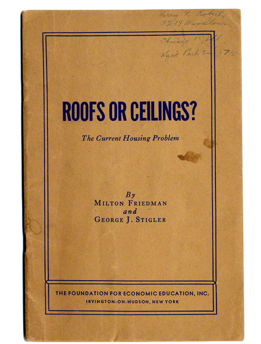

Chapter I
The most tempting idea in economics
Rising rents make a legal cap feel immediate and humane.
In every expensive city on Earth, the same conversation repeats. Rents rise faster than paychecks. A family gets a renewal notice with a number that makes their stomach drop. And someone proposes the obvious remedy: make it illegal. Cap the rent. Freeze it. If housing is a human right, why should a landlord be allowed to price a person out of their own neighborhood?
The appeal is real, and so is the problem it responds to. In big, productive cities, a third or more of renter households spend over 30 percent of their income on housing — the standard threshold for being “rent burdened.” Rent control promises relief, and it delivers something voters can feel immediately: my rent stops rising, starting now. 1
1 “Rent control” is a family of policies. First-generation controls (1940s-style) freeze nominal rents outright. Second-generation controls, common today, cap annual increases, often with exemptions for new buildings and rent resets between tenants. The economist Richard Arnott introduced this taxonomy in 1995. The distinction matters — and, as we’ll see, so does everything a ceiling doesn’t change.Yet among economists, rent control has achieved something remarkable: near-consensus in a field famous for disagreement. In a 1992 survey of American economists, 93 percent agreed that rent ceilings reduce the quantity and quality of housing available. When the IGM panel of elite economists — left, right, and center — was asked in 2012 whether rent control had improved affordable housing in New York and San Francisco over the prior three decades, 2 percent agreed.2
2 Alston, Kearl & Vaughan, “Is There a Consensus Among Economists in the 1990’s?” American Economic Review (1992); IGM Economic Experts Panel, “Rent Control,” February 2012. The IGM panel includes Nobel laureates from across the political spectrum.This essay is about the gap between those two intuitions — the voter’s and the economist’s. It isn’t a story about greedy landlords versus deserving tenants. It’s a story about what a price is, what happens when you silence one, and what a hundred years of natural experiments — earthquakes, wars, monsoons, referenda — have revealed about cities that tried.
Chapter II
A Price is a Signal
Rent control doesn’t repeal scarcity. It just deletes the signal that manages it.
A rent is not merely a bill. It is a message flashed between strangers. To renters it says: housing here is scarce — economize on it, share it, or consider the next neighborhood over. To builders and landlords it says: people desperately want to live here — build, convert, renovate, rent out the basement. High rents are how a city calls for more housing, the way a fever calls for antibodies.
In Modern Principles of Economics, Tyler Cowen and Alex Tabarrok put it simply: a price is a signal wrapped up in an incentive. A price ceiling doesn’t make housing cheaper any more than smashing a thermometer makes a fever go down. It makes the signal illegal while leaving the scarcity untouched — and then the scarcity finds other, crueler ways to express itself.3
3 Cowen & Tabarrok, Modern Principles of Economics, chapter on price ceilings. Their canonical list of what ceilings produce: shortages, reduced quality, wasteful search, lost gains from trade, and misallocation. This essay is organized around watching each one appear in the wild.Below the market rent, two things happen at once. Renters demand more housing — people who would have shared, stayed with parents, or lived a suburb out now want their own place downtown. And owners supply less — apartments quietly become condos, offices, short-term rentals, or the landlord’s own in-law unit, and new rental construction loses its reason to exist. The gap between those two curves is the shortage. Drag the ceiling yourself:
Two subtleties make rent control especially seductive — and especially damaging. First, housing is durable. Buildings don’t vanish the day a ceiling passes; they erode over decades of skipped paint jobs, cancelled projects, and quiet conversions. The costs arrive on a lag, long after the politicians who passed the law have taken their bows. Second, the beneficiaries are visible and the victims are hypothetical. The tenant whose rent is frozen knows it. The family that never moved to the city because no apartment was listed doesn’t even know it was the victim of a policy.
Economic theory predicts a ceiling held below market rent will produce five things:
More renters chase fewer homes. The gap can’t close through price, so it doesn’t close at all.
Maintenance is how a landlord competes for tenants. With a queue at the door, why fix the boiler?
Queues, waiting lists, key money, connections. People pay in time and favors what they may not pay in rent.
Apartments that renters value far above the cost of supplying them simply never exist. Pure loss, to everyone.
Who gets the scarce homes? Not those who need them most — those who got there first, and never leave.
That’s the theory. The rest of this essay is the evidence — five predictions, checked against a century of cities.
Chapter III
The earthquake and the law
San Francisco lost half its housing in 1906 and had no housing crisis. In 1946 it lost nothing — and had one.
On April 18, 1906, an earthquake and three days of fire destroyed 3,400 acres in the heart of San Francisco. “Not a hotel of note or importance was left standing,” wrote the general commanding federal troops. “The great apartment houses had vanished.” Two hundred twenty-five thousand people — more than half the city — were homeless. The survivors’ housing stock had to absorb, on average, 40 percent more people per remaining home.
Now open the San Francisco Chronicle of May 24, 1906, the first issue published after the disaster, and look for the housing crisis. You won’t find it. There is not a single mention of a housing shortage. The classifieds that day carried 64 advertisements offering flats and houses for rent — against 5 ads from people seeking one.4
4 All figures from Milton Friedman and George Stigler, Roofs or Ceilings? The Current Housing Problem (Foundation for Economic Education, 1946) — the first popular economics pamphlet either man wrote, years before either won a Nobel Prize.Forty years later, in 1946, San Francisco faced a far milder squeeze. Wartime migration meant the city had to fit about 10 percent more people per dwelling than before the war — a shortage Friedman and Stigler reckoned one-quarter as acute as 1906’s. This time the governor called housing “the most critical problem facing California.” In the first five days of 1946 the classifieds carried 4 ads offering apartments for rent — and 30 ads a day from people begging for one.

What was different? Not scarcity — 1906’s was vastly worse. What differed was the rationing mechanism. In 1906, higher rents did the rationing: families squeezed into fewer rooms, rented out spares, and builders raced to supply more. Every roof found the people who needed it most urgently. In 1946, raising rents was illegal.
In 1906 the rationing was done by higher rents. In 1946 … the rationing is by chance and favoritism.
“Chance and favoritism” was not a rhetorical flourish. It was a prediction about who gets housing when prices can’t decide — a prediction we can now test with seventy more years of data. Keep it in mind when we reach Stockholm’s queue and Oslo’s babysitting clauses.
Chapter IV · Quality
Mumbai: the city where the rent stood still
In 1947, Bombay froze rents at roughly their 1940 levels. The freeze was temporary — and was then extended, and extended, and extended, for more than half a century. In the heart of one of the most expensive property markets on Earth, tenants in grand old buildings still pay a few dollars a month, protected by law, passing tenancies down through generations.
The law could freeze the rent. It could not freeze the buildings. A landlord collecting 1940 rent in a 2020 economy cannot pay for waterproofing, rebar, or repairs — and has no reason to try, since a queue of tenants waits regardless, and the sitting ones can never be moved. So the buildings age, sag, and crumble. Mumbai keeps an official register of dilapidated structures; the island city’s stock of “cessed” buildings — over 14,000 of them, nearly all rent-controlled — is so hazardous that the state levies a special tax to fund a public board whose job is repairing private buildings their owners long ago abandoned to entropy. Every monsoon season, some of them come down, and people die in the rubble.
Alex Tabarrok on rent control in Mumbai — crumbling buildings, monsoon collapses, and why a frozen rent becomes a falling roof. (Marginal Revolution University, from the Modern Principles video series.)
In many cases rent control appears to be the most efficient technique presently known to destroy a city — except for bombing.
The Americans couldn’t destroy Hanoi, but we have destroyed our city by very low rents.
The empirical literature backs the war metaphors with tedium: of the dozens of published studies on rent control and housing quality, all but two find that controlled housing deteriorates — less maintenance, less renovation, older systems left to fail. Quality is the escape valve. If a landlord cannot raise the rent to the market level, he can let the apartment fall to the rent’s level instead.
Chapter V
The queue, the key, and the babysitting clause
When money can’t ration housing, something else will. That something is rarely fairer.
Stockholm is a beautiful, orderly city with a beautiful, orderly catastrophe at its center. Rents on first-hand contracts are held far below market by negotiated “utility value” rules, so almost no one gives an apartment up — and getting one means joining the municipal housing queue. Not a metaphorical queue: a literal one, with a number. Nearly one million people are registered (~900,000 as of 2026). The average wait for a contract runs about nine years. For an attractive address in the inner city, expect twenty.5
5 Stockholm’s municipal housing agency (Bostadsförmedlingen) publishes queue statistics annually; averages hover around 9–10 years, with central districts far higher. Savvy parents register their children at age 18 — the earliest allowed — as a coming-of-age gift.Oslo ran the experiment in reverse
Norway abolished its rent control in 1982, and the economist Are Oust realized the newspapers had been quietly recording the whole experiment. He collected housing classifieds from Oslo’s Aftenposten from 1970 to 2008 and watched the market turn inside out.6
6 Are Oust, “The removal of rent control and its impact on search and mismatching costs: evidence from Oslo” — one of the four papers in this project’s source folder. The details below (employer ads, service offers, deposits) are all from his Tables 4–5.Under rent control, Oslo’s listings pages looked nothing like a housing market. It was tenants who advertised, pleading their qualities to landlords — “housing wanted” ads outnumbered “housing for rent.” Ten to fifteen percent of those ads were placed by the tenant’s employer, vouching for them the way a bank vouches for a borrower. Tenants offered babysitting, gardening, snow-shoveling, and janitorial work on the side to sweeten the deal. Landlords, for their part, could demand a tenant of a particular gender, age, occupation, region of origin — some ads specified “strong Christian beliefs.” Deposits commonly ran to 50 or 60 months’ rent, occasionally 100 or more: tenants effectively lent the landlord the equity of the flat, interest free. And only about 20 percent of “for rent” ads dared print the rent, much of which would have been illegal.
Then the ceiling lifted. Within a few years the page flipped: landlords advertised to tenants, roughly 80 percent of listings printed an asking rent, the mega-deposits vanished, and the demands for snow-shoveling Christians of specified gender dwindled to nothing. The price went back to doing the rationing — so nothing else had to.
This is the answer to “chance and favoritism.” Under a binding ceiling the apartment goes not to the family that needs it most, but to the applicant with the right employer, the right connections, the right demographic profile, the cash for key money — or simply the luck to already be inside. Economists call these search costs and they are the cruelest part of the bargain: rent paid to a landlord is at least a transfer that keeps housing supplied. Years in a queue, favors, and discrimination benefit no one at all.
Chapter VI
Musical chairs, with no music
Rent control decides who gets housing by one rule: never move.
Picture a widow in a rent-controlled classic six on the Upper West Side. Her children are grown and gone; the second and third bedrooms hold boxes. Three subway stops away, a family of five squeezes into a one-bedroom. In a normal market this problem solves itself — the big apartment’s market rent nudges her toward a place that fits, and the family gladly pays for the space. Under rent control, swapping is financial suicide: her rent is a relic of 1985, and the moment she moves she loses it forever. So the boxes keep the bedrooms, the family keeps the crowding, and the law congratulates itself on protecting them both.
Ed Glaeser and Erzo Luttmer put a number on this. Comparing who lives in what across New York City, they estimated that 21 percent of rent-controlled apartments were occupied by the “wrong” household — wrong at least in size, singles in family flats and families in studios — relative to how an unregulated market would sort them.7
7 Glaeser & Luttmer, “The Misallocation of Housing Under Rent Control,” American Economic Review (2003). Their point is subtle and damning: the usual deadweight-loss triangle understates the harm, because it assumes the scarce apartments at least go to those who value them most. Under rent control, they don’t.The lock-in shows up everywhere researchers look. In Copenhagen, tenants in the most tightly controlled units stay dramatically longer than comparable tenants in freer segments. In the 112-study literature we’ll meet properly in the next chapter, the effect of rent control on tenant mobility is one of the most consistent findings in all of housing economics: nearly every study finds it falls. That is partly the policy working — stability is the point — and partly the policy failing, because a city where no one can afford to move is a city where workers can’t follow jobs, growing families can’t find space, and every apartment is a lottery ticket its holder dares not cash.
Misallocation also has a distributional sting: the winners of the never-move lottery are not especially poor. Rent control is almost never means-tested. New York’s stabilized apartments have sheltered celebrities and congressmen; the film director’s $1,500 classic eight and the four rent-stabilized units famously combined by a sitting congressman made headlines precisely because the law never asks who you are — only when you arrived.
Chapter VII
The verdict from the field
Modern economics runs on natural experiments. Rent control has provided some beauties.
San Francisco, 1994: the law that fed on itself
The cleanest evidence we have comes from an accident of ballot design. San Francisco’s 1979 rent control law exempted small buildings — “mom and pop” landlords — until a 1994 initiative suddenly removed the exemption. But the initiative only touched buildings constructed before 1980. The result was a razor-sharp natural experiment: nearly identical small buildings and tenants, divided by a construction date, half of them abruptly rent-controlled. Rebecca Diamond, Tim McQuade, and Franklin Qian followed both groups for decades using address-level migration data.8
8 Diamond, McQuade & Qian, “The Effects of Rent Control Expansion on Tenants, Landlords, and Inequality: Evidence from San Francisco,” American Economic Review (2019) — in the source folder. The mobility figure: beneficiaries were 3.5 percentage points more likely to remain at their 1994 address, against a control-group baseline of 18 percent — a 19.4 percent increase.The tenants who won coverage clearly valued it. They were about 20 percent more likely to remain at their address, and 4.5 percentage points more likely to still be in San Francisco at all — rent control genuinely protected sitting tenants from displacement, exactly as intended. Then the landlords responded.
Landlords hit by the law cut the housing they supplied to renters by 15 percent — not by letting buildings rot, mostly, but by lawful exit: selling units to owner-occupants, converting to condos, or demolishing and rebuilding into exempt new construction. The replacement housing catered to higher-income buyers. The authors’ conclusion is a small masterpiece of economic irony: by shrinking rental supply, the law “likely drove up market rents in the long run, ultimately undermining the goals of the law.” Rent control taxed landlords to insure sitting tenants — and the tax was paid by future renters, in the form of a smaller, pricier, more gentrified rental market.
Cambridge, 1995: the ghost premium
Massachusetts voters abolished rent control statewide in 1994, decontrolling Cambridge overnight. David Autor, Christopher Palmer, and Parag Pathak tracked what happened to property values: decontrolled buildings appreciated sharply, as expected — but so did never-controlled buildings on the same blocks. Decontrol added roughly $2 billion to Cambridge property values over the following decade, and most of the gain came from those spillovers.9 Rent-controlled buildings had been dragging down whole neighborhoods — through disrepair, underinvestment, and blight — and the market had been quietly billing everyone for it.
9 Autor, Palmer & Pathak, “Housing Market Spillovers: Evidence from the End of Rent Control in Cambridge, Massachusetts,” Journal of Political Economy (2014). Related: Sims (2007) finds Massachusetts decontrol raised rental supply and maintenance.112 studies, one scoreboard
In 2024 Konstantin Kholodilin published what he calls an “almost complete review” of the empirical rent control literature: 206 works, of which 112 are published empirical studies, spanning 1967–2023 and every continent that has tried the policy.10 The headline result: rent control does lower rents in controlled units — by 9.4 percent on average — and raises them in uncontrolled units by 4.8 percent, as the squeezed-out overflow bids up whatever the law doesn’t reach. The relief is real, and so is the bill; it’s just mailed to someone else.
10 Kholodilin, “Rent control effects through the lens of empirical research,” Journal of Housing Economics (2024) — in the source folder. The scoreboard: mobility ↓ in nearly every study; quality ↓ in all but two; new construction ↓ in about two-thirds; homeownership ↑ in the majority (condo conversion, again); uncontrolled rents ↑ almost everywhere.Three cities, one decade: the replication era
The 2020s have run the experiment three more times, in fast-forward.
Berlin froze rents on most of its housing stock in February 2020 — the Mietendeckel. Rents on covered flats duly fell. So did the number of covered flats anyone could actually rent: listings of controlled apartments collapsed by more than half within a year, as owners sold, held units empty, or waited out a law they expected to die. Germany’s constitutional court obliged in April 2021, voiding the freeze — and Berlin tenants got retroactive back-rent bills.
St. Paul, Minnesota passed one of America’s strictest ordinances by referendum in November 2021: 3 percent annual cap, no inflation indexing, and — unusually — no exemption for new construction. Multifamily building permits slumped while neighboring Minneapolis’s rose, and researchers found property values fell by 6–7 percent, with losses concentrated in exactly the neighborhoods the law meant to help. Within a year the city council exempted new construction for twenty years — a referendum result, amended by its own consequences.11
11 Ahern & Giacoletti, “Robbing Peter to Pay Paul? The Redistribution of Wealth Caused by Rent Control” (NBER working paper, 2022), on St. Paul; on Berlin, see Hahn, Kholodilin, Waltl & Fongoni, “Forward to the Past: Short-Term Effects of the Rent Freeze in Berlin,” Management Science (2024).Buenos Aires ran both arms of the trial. A 2020 national rental law — mandatory three-year contracts, indexed increases — was followed by landlords pulling apartments from the long-term market en masse; the rental supply visible on listing sites shriveled while asking rents soared. In December 2023 the law was repealed outright. Within a year, listings had multiplied severalfold and inflation-adjusted asking rents had fallen substantially. Few policies have ever been switched off and on so cleanly, with the market answering both times.
Next to bombing, rent control seems in many cases to be the most efficient technique so far known for destroying cities — and yet, unlike bombing, it is a policy cities keep choosing for themselves.
Chapter VIII
Who wins, who loses
Rent control isn’t a transfer from landlords to tenants. It’s a transfer from future tenants to present ones.
Honesty requires saying plainly what rent control gets right. Renters face a genuine hardship: build a life in a neighborhood — job, school, friendships, aging parents — and a rent spike can confiscate all of it at lease renewal. Homeowners are shielded from this automatically; renters are not. Diamond, McQuade, and Qian found that San Francisco’s covered tenants really did stay, and most of those who stayed would otherwise have left the city entirely. Rent control is, at its core, insurance against displacement — and the problem it responds to is real.
But a lack of housing is a hardship too — every bit as heavy as a rent increase, and usually heavier. The family doubled up with in-laws, the worker turning down a better job because there’s nothing to rent near it, the couple whose apartment search stretches into its second year: these are the people on the other side of the shortage. The difference between the two hardships is not their size. It is that the tenant facing a rent increase lives in the city and votes there, while the people priced out or queued out mostly don’t live there yet — and never will, precisely because of the policy. One hardship has a face, an address, and a ballot; the other belongs to strangers the city will never meet. Democracy weighs the first and cannot even see the second.
And the premium still has to be paid by someone. It falls first on landlords — but landlords can exit, and do: condo conversions, redevelopment, deferred maintenance. As supply shrinks, the cost shifts to everyone outside the walls: the young, the newcomers, the growing families — who face fewer listings, higher market rents, longer queues, and landlords choosy enough to demand references from employers. The benefits are untargeted (the sitting tenant might be a retired banker; the excluded outsider a night-shift nurse), and they decay: even in San Francisco, the displacement protection eroded year by year as buildings left the rental stock. Rent control is a policy whose costs compound and whose benefits evaporate — the exact reverse of what good insurance looks like.
Gunnar Myrdal — Swedish social democrat, architect of the welfare state, Nobel laureate — watched his own country’s version and called rent control “perhaps the worst example of poor planning by governments lacking courage and vision.” It takes nothing away from the seriousness of the affordability crisis to notice that this particular answer keeps failing the people it is written for.
Chapter IX
What would actually work
Rents climb when a city adds homes more slowly than people seek them, so allowing more construction can ease the pressure.
Rents are high in San Francisco and low in Houston not because Texan landlords are kinder, but because Houston lets people build. Where zoning, permitting, and land-use rules allow supply to answer demand, demand shocks show up as construction cranes; where they don’t, demand shows up as rent. The deepest fix for expensive housing is embarrassingly literal: more housing. When Auckland broadly upzoned in 2016, construction surged and rents fell relative to trend. Tokyo, which permits housing by right at a pace American cities would consider reckless, has kept rents remarkably flat through decades of population inflow into the metro core.
Housing vouchers and cash assistance help households pay market rents, which keeps the incentive to supply homes intact. Longer leases can smooth sudden increases for settled tenants, and tenure-based limits can give added protection after many years in one home.
If a city insists on rent control anyway…
Second-generation designs can blunt the worst damage. Each rule below is a lesson some city paid to learn — and notice the fine print: every fix works by weakening the control, which is the quiet admission at the heart of the policy.
- Exempt new construction, permanently.
St. Paul’s lesson. Tax the existence of future buildings and they don’t exist. Every workable ordinance shields them — which is why rent control can never make more housing affordable, only redistribute today’s.
- Cap increases; don’t freeze levels.
Mumbai’s lesson. Allow inflation plus a margin, or maintenance becomes a charity project and buildings decay to match their rents.
- Let rents reset between tenants.
Vacancy decontrol preserves the insurance for sitting tenants while keeping landlords in the rental business — at the price of giving them a reason to want tenants gone, so pair it with strong anti-harassment enforcement.
- Reward upkeep.
Tie permitted increases to documented improvements, or quality becomes the escape valve.
- Ask who’s being helped.
Untargeted control protects celebrities in classic sixes as fiercely as night-shift nurses. Means-tested assistance does not.
- Pair any control with a building boom.
Rent control at best manages a shortage. Only supply ends one. A city that caps rents while blocking construction has chosen the queue, the key money, and the crumbling roof — it just hasn’t received them yet.
The ceiling trap, in the end, is a trap of timing. The benefits of rent control arrive immediately and visibly, to people with names and leases. The costs arrive slowly and anonymously — a building not built, a listing never posted, a family that settled elsewhere. Politics counts the first kind and not the second. Economics exists, in large part, to count both.
Sources & further reading
- Cowen, T. & Tabarrok, A. Modern Principles of Economics (Macmillan) — chapters on price ceilings and rent control; the framework of shortages, quality decay, search costs, lost gains from trade, and misallocation used throughout this essay.
- Tabarrok, A. “Price Ceilings: Rent Controls,” Marginal Revolution University video (embedded above) — rent control in Mumbai. youtu.be/2fh4tPWYeks
- Friedman, M. & Stigler, G. J. (1946). Roofs or Ceilings? The Current Housing Problem. Foundation for Economic Education. The 1906/1946 San Francisco comparison.
- Diamond, R., McQuade, T. & Qian, F. (2019). “The Effects of Rent Control Expansion on Tenants, Landlords, and Inequality: Evidence from San Francisco.” American Economic Review 109(9): 3365–3394. doi.org/10.1257/aer.20181289
- Kholodilin, K. A. (2024). “Rent control effects through the lens of empirical research: An almost complete review of the literature.” Journal of Housing Economics 63: 101983. doi.org/10.1016/j.jhe.2024.101983
- Oust, A. (2018). “The Removal of Rent Control and Its Impact on Search and Mismatching Costs: Evidence from Oslo.” International Journal of Housing Policy 18(3): 433–453. doi.org/10.1080/19491247.2017.1336876
- Autor, D., Palmer, C. & Pathak, P. (2014). “Housing Market Spillovers: Evidence from the End of Rent Control in Cambridge, Massachusetts.” Journal of Political Economy 122(3): 661–717. doi.org/10.1086/675536
- Glaeser, E. & Luttmer, E. (2003). “The Misallocation of Housing Under Rent Control.” American Economic Review 93(4): 1027–1046. doi.org/10.1257/000282803769206188
- Sims, D. (2007). “Out of control: What can we learn from the end of Massachusetts rent control?” Journal of Urban Economics 61(1): 129–151. doi.org/10.1016/j.jue.2006.06.004
- Ahern, K. & Giacoletti, M. (2022). “Robbing Peter to Pay Paul? The Redistribution of Wealth Caused by Rent Control.” NBER Working Paper 30083 — St. Paul, Minnesota.
- Alston, R., Kearl, J. & Vaughan, M. (1992). “Is There a Consensus Among Economists in the 1990’s?” American Economic Review 82(2); and IGM Economic Experts Panel, “Rent Control” (2012).
- Lindbeck, A. (1971). The Political Economy of the New Left. Harper & Row. Source of the bombing quotation.
- Hahn, A., Kholodilin, K., Waltl, S. & Fongoni, M. (2024). “Forward to the Past: Short-Term Effects of the Rent Freeze in Berlin.” Management Science. doi.org/10.1287/mnsc.2023.4775
- Stockholm Bostadsförmedlingen, annual queue statistics.